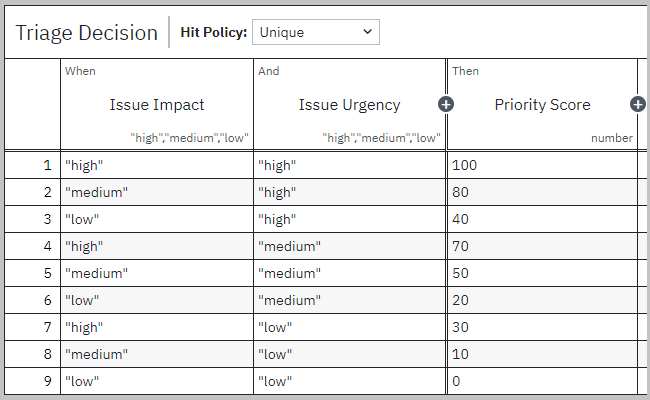
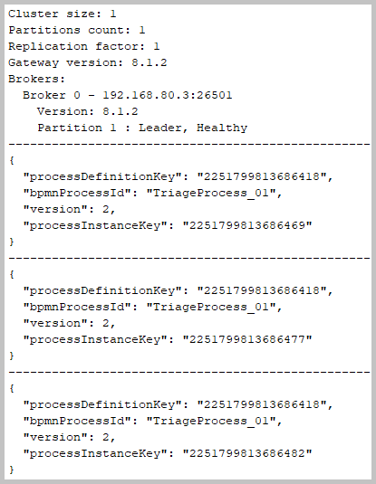

The sections of this project:
Java source code. Packages:

 application sources :
kp
application sources :
kp
test sources :
kp.decisions

 Java API Documentation ●
Java Test API Documentation
Java API Documentation ●
Java Test API Documentation
Action:

 1. With batch file
"01 Docker create Camunda.bat" create Camunda in Docker.
1. With batch file
"01 Docker create Camunda.bat" create Camunda in Docker.
 1.1. The Camunda in Docker is created with Docker configuration
docker-compose-core.yaml.
1.1. The Camunda in Docker is created with Docker configuration
docker-compose-core.yaml.

 The screenshot of the created Docker containers.
The screenshot of the created Docker containers.
Action:
1. In "Camunda Modeler" open
 business-process-diagram-01.bpmn and
decision-requirements-diagram-01.dmn
business-process-diagram-01.bpmn and
decision-requirements-diagram-01.dmn
2. In "Camunda Modeler" deploy
business-process-diagram-01.bpmn to local Docker 'http://localhost:26500'.
2.1. The business process model and the decision model were created with Camunda Modeler.
This modeler was downloaded and locally installed.
The
screenshot of the deployment dialog in "Camunda Modeler".
2.2. The business process diagram file
business-process-diagram-01.bpmn.
The business process diagram in "Camunda Modeler".
2.3. The decision requirements diagram file
decision-requirements-diagram-01.dmn.
From 'impact' and 'urgency' it is computed 'priority'.

The decision requirements diagram in "Camunda Modeler".
2.4. Priority Matrix
| impact | |||
|---|---|---|---|
| high | medium | low | |
| urgency high | 100 | 80 | 40 |
| urgency medium | 70 | 50 | 20 |
| urgency low | 30 | 10 | 0 |
2.5. Condition Matrix
| Flow From Service Task | Flow To Service Task | Flow Type | Condition Expression |
|---|---|---|---|
| Triage | High Priority | Sequence Flow | priority >= 80 |
| Triage | Medium Priority | Sequence Flow | priority > 20 and priority < 80 |
| Triage | Low Priority | Default Flow |
Action:
1. With batch file
"02 MVN clean install run.bat" run the SpringBoot application with the enabled Zeebe client.
Action:
1. Start workflow with batch file
"03 Zeebe start instances.bat".
4.1. The workflow results from the Zeebe CLI client.

Console log from the execution of the batch file "03 Zeebe start instances.bat".
4.2. The workflow results from the SpringBoot application.
Console log from the SpringBoot application.
4.3. The Zeebe workers are the components that subscribe to Zeebe to execute available jobs:
4.4. Assigning the workers (SpringBoot components) to the service tasks (from the business process diagram).
Service task "Triage" has the task definition type "service-triage".
This type is set in method
kp.workers.impl.TriageWorker::handle on 'JobWorker' annotation.
In method
kp.workers.impl.TriageWorker::initialize is created 'DmnDecision' from parsed decision requirements diagram file
decision-requirements-diagram-01.dmn.
This 'DmnDecision' is evaluated in 'kp.workers.impl.TriageWorker::handle' method.
Service task "High Priority" has the task definition type "service-priority-high".
This type is set in method
kp.workers.impl.HighPriorityWorker::handle on 'JobWorker' annotation.
Service task "Medium Priority" has the task definition type "service-priority-medium".
This type is set in method
kp.workers.impl.MediumPriorityWorker::handle on 'JobWorker' annotation.
Service task "Low Priority" has the task definition type "service-priority-low".
This type is set in method
kp.workers.impl.LowPriorityWorker::handle on 'JobWorker' annotation.
Service task "Approve" has the task definition type "service-approve".
This type is set in method
kp.workers.impl.ApproveWorker::handle on 'JobWorker' annotation.
This worker sets unconditionally the value "approved".
4.5. The workflow results in "Camunda Operate" on Docker http://localhost:8081/.
The
screenshot of all three process instances
The
screenshot of the process instance triaged to high priority
The
screenshot of the process instance triaged to medium priority
The
screenshot of the process instance triaged to low priority
| Camunda Platform | workflow and decision automation platform |
| Camunda | process orchestrator |
| Zeebe | workflow engine for microservices orchestration |
| BPMN | Business Process Model and Notation |
| DMN | Decision Model and Notation |
| DRD | Decision Requirements Diagram |
| COTS | Commercial Off-The-Shelf Software |
| RPA | Robotic Process Automation |
{kind=link}
{kind=link}
{kind=link}
{kind=link}
{kind=link}